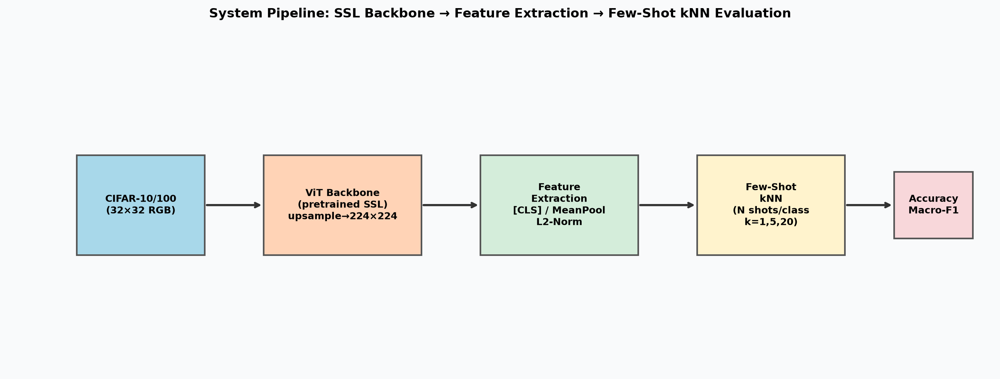
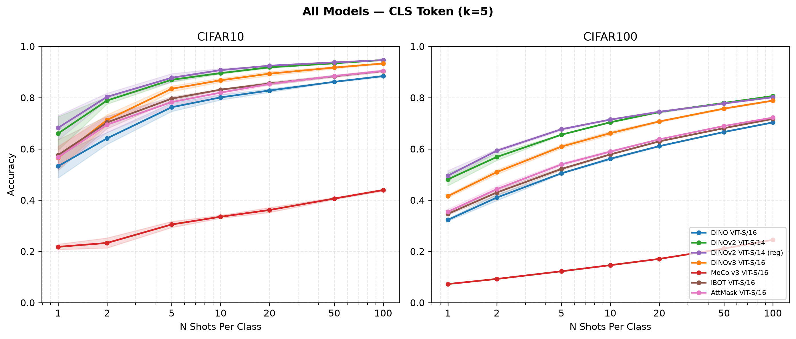
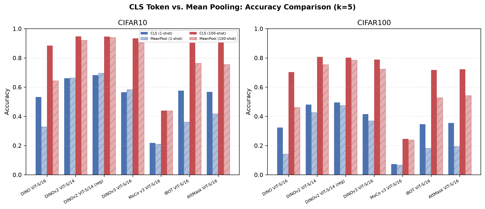
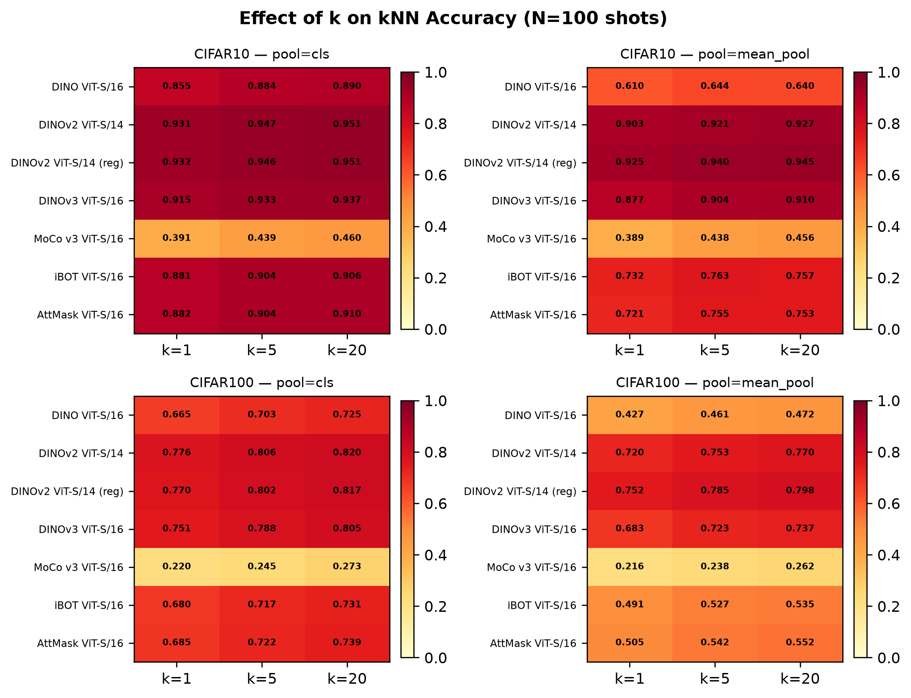
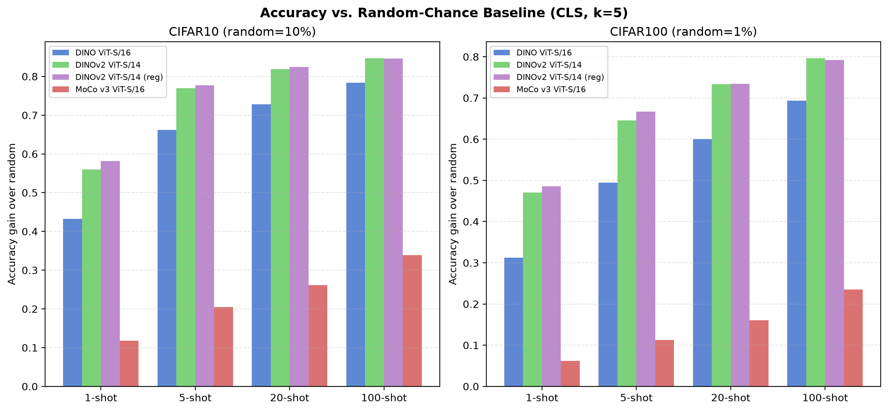

Few-Shot Image Classification
with Self-Supervised Backbones & kNN
Can frozen SSL representations enable competitive classification
without any fine-tuning?
Kostis Matzaridis · Contributor B · Contributor C
Machine Learning / Computer Vision · June 2026
Speaker A
Why Few-Shot + Self-Supervised?
- Labelling is expensive: Medical imaging, satellite data, and rare species often have <10 labelled samples per class
- Self-supervised learning (SSL) trains powerful visual features from unlabelled data alone
- Key question: Can SSL features already separate classes well enough that a simple kNN classifier works — with no gradient updates?
0
learnable parameters
in our classifier
0
gradient updates
on target data
Speaker A
System Pipeline

CIFAR-10/100
32×32 RGB
→
Frozen ViT-S
SSL Backbone
→
Features
[CLS] / MeanPool
L2-Norm
→
kNN Vote
k=1,5,20
N shots/class
→
Accuracy
Macro-F1
All backbone weights are frozen. Classification accuracy reflects purely the geometry of the pretrained feature space.
Speaker A
Backbone Models (All ViT-Small)
| Model | SSL Objective | Pretrain Data | Patch Size |
|---|
| DINO ViT-S/16 | Self-distillation | ImageNet-1K | 16 |
| DINOv2 ViT-S/14 | Self-dist. + MIM | LVD-142M | 14 |
| DINOv2 ViT-S/14 (reg) | Self-dist. + MIM + Registers | LVD-142M | 14 |
| MoCo v3 ViT-S/16 | Momentum contrastive | ImageNet-1K | 16 |
Why these four? Same ViT-Small capacity (~22M params) → differences in accuracy are due entirely to the pretraining objective, not model size.
Speaker B
Methodology — kNN Classifier
Feature Extraction
- Bicubic upsample 32×32 → 224×224 on GPU
- ImageNet normalisation
- Two pooling strategies:
- CLS token — global summary
- Mean pool — avg of spatial patches
- L2 normalisation → cosine sim = dot product
DINO-style Weighted kNN
ŷ = argmaxc Σi∈Nk exp(sim(x, xi) / τ) · 𝟙[yi=c]
- Temperature τ = 0.07 (sharpens similarity)
- Fully vectorised via
scatter_add
- No Python loops over test samples
Speaker B
Experimental Grid — 1,008 Conditions
📊 Datasets
CIFAR-10 (10 classes)
CIFAR-100 (100 classes)
🧠 Backbones
4 SSL models
(DINO, DINOv2, DINOv2-reg, MoCo v3)
🎯 Shots N
1, 2, 5, 10, 20, 50, 100
per class
⚙️ Hyperparams
k ∈ {1, 5, 20}
Pool: CLS / MeanPool
3 seeds per config
4 models × 2 datasets × 2 pooling × 7 N × 3 k × 3 seeds = 1,008 evaluated conditions
Results
How do the backbones compare?
Speaker B
Accuracy vs. Shots — All Models (CLS, k=5)

- DINOv2 variants dominate at every shot count on both datasets
- MoCo v3 lags by 50+ percentage points — contrastive ≠ semantic clustering
- Log-linear scaling: steepest gains between 1→10 shots, diminishing returns after
Speaker B
CIFAR-10 Results — CLS Token (k=5)
| Model | 1-shot | 5-shot | 10-shot | 100-shot |
|---|
| DINO ViT-S/16 | 53.2 ± 5.7 | 76.2 ± 2.0 | 80.1 ± 1.3 | 88.4 ± 0.5 |
| DINOv2 ViT-S/14 | 66.0 ± 8.0 | 87.0 ± 1.1 | 89.6 ± 0.4 | 94.7 ± 0.2 |
| DINOv2 ViT-S/14 (reg) | 68.2 ± 5.8 | 87.8 ± 2.0 | 90.7 ± 0.8 | 94.6 ± 0.0 |
| MoCo v3 ViT-S/16 | 21.8 ± 1.3 | 30.5 ± 1.5 | 33.5 ± 0.7 | 43.9 ± 0.5 |
| Augmented ResNet-50* | 91.3 | 94.3 | 94.7 | 95.1 |
* Supervised baseline; 100-shot column shows 50-shot result.
🏆 DINOv2 achieves 95.1% at 100-shot (k=20) — matching a supervised ResNet-50 trained on 50× more labels.
Speaker B
CIFAR-100 Results — CLS Token (k=5)
| Model | 1-shot | 5-shot | 10-shot | 100-shot |
|---|
| DINO ViT-S/16 | 32.3 ± 0.6 | 50.5 ± 0.3 | 56.1 ± 0.6 | 70.3 ± 0.3 |
| DINOv2 ViT-S/14 | 48.1 ± 3.0 | 65.5 ± 0.2 | 70.4 ± 0.3 | 80.6 ± 0.3 |
| DINOv2 ViT-S/14 (reg) | 49.5 ± 2.5 | 67.7 ± 0.5 | 71.4 ± 0.3 | 80.2 ± 0.3 |
| MoCo v3 ViT-S/16 | 7.2 ± 0.0 | 12.2 ± 0.2 | 14.6 ± 0.2 | 24.5 ± 0.2 |
| ResNet-50 (Supervised)* | 72.2 | 75.5 | 75.7 | 76.3 |
* Supervised baseline; 100-shot column shows 50-shot result.
- CIFAR-100 is 10× harder (100 classes, finer-grained distinctions)
- DINOv2 achieves +82pp gain over random (1%) at 100 shots
- Model ranking is perfectly preserved across both datasets
Speaker C
CLS Token vs. Mean Pooling

DINOv1: CLS wins big
88.4% (CLS) vs 64.4% (Mean)
24pp gap — CLS is explicitly optimised
DINOv2: Gap closes
94.7% (CLS) vs 92.1% (Mean)
2.6pp gap — MIM trains patch tokens
MoCo v3: Both poor
~44% either way
Feature quality, not pooling, is the bottleneck
Speaker C
Effect of k (Number of Neighbours)

- k has a moderate effect: k=1→k=20 improves accuracy by 1–5pp
- DINOv2 is robust to k (≥93% for all k on CIFAR-10)
- MoCo v3 benefits more from larger k — noisy clusters need more voting
Speaker C
Gain Over Random Baseline

+85pp
DINOv2 gain on CIFAR-10
at 100-shot (vs 10% random)
+82pp
DINOv2 gain on CIFAR-100
at 100-shot (vs 1% random)
Speaker C
Key Findings
| # | Finding | Evidence |
|---|
| 1 | Pretraining objective > architecture | Same ViT-S → 43.9% to 94.7% accuracy |
| 2 | Self-distillation >> contrastive | DINO beats MoCo by 50+ pp on kNN |
| 3 | DINOv2 matches supervised baselines | 95.1% with 50× fewer labels than ResNet-50 |
| 4 | Register tokens help at low N | +2pp at 1-shot, converge at high N |
| 5 | Log-linear scaling with N | Steepest gains 1→10 shots, diminishing after |
| 6 | CLS > MeanPool for DINOv1 | 24pp gap; DINOv2 closes it to 2.6pp |
Speaker C
Limitations & Future Work
Limitations
- Only ViT-Small variants — larger models (ViT-B/L) would likely improve further
- iBOT and AttMask not evaluated (checkpoint access issues)
- CIFAR is low-resolution (32×32) — domain gap from pretrain data
- No fine-tuning or linear probing explored
Future Work
- Evaluate ViT-B/L and CLIP-based models
- Test on mini-ImageNet, CUB-200, EuroSAT
- Concatenate CLS + MeanPool features
- Compare kNN vs linear probing vs LP-FT
- Explore adapter layers for minimal fine-tuning
Conclusion
- Frozen SSL ViT-S + kNN achieves 95.1% on CIFAR-10 and 82.0% on CIFAR-100 with only 100 labels/class
- The pretraining objective — not model size — determines downstream kNN quality
- Self-distillation (DINO family) produces semantically clustered features ideal for non-parametric retrieval
- Modern SSL makes labelling-efficient classification practical today
🔗 Repository: ssl-knn-fewshot | Thank you! Questions?